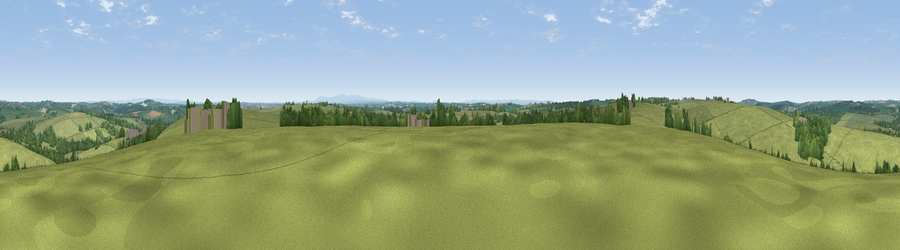

Viewpoint near Bradworthy
#22468 in England · top 51% of its area beats it · near Bradworthy · access?Where it is
The exact computed spot (SS 32675 16275). Click the marker for map links.
Public access: no public right of way or access land is recorded at this exact spot — it may be on private land. Computed from Natural England's CRoW access layer and OpenStreetMap rights of way — not the legal definitive map. Always verify locally.
The view, rendered

A 360° render of this exact spot computed from the terrain model, tree cover and land cover — summer colours, afternoon light, calibrated against photographs of famous viewpoints. Real trees, hedges and buildings will differ in detail.
The panorama
Grey silhouette: terrain skyline in each direction (720 bearings, Earth curvature and refraction included). Dashed green: skyline with trees (+15 m) and buildings (+8 m) as obstacles. Blue strip: how far the ground is visible on each bearing.
Where the view opens
Wedge length = distance to the farthest visible ground on that bearing (vegetation-aware). Rings at 10, 25 and 50 km.
What fills the view
85% grassland · 11% woodland · 3% cropland · 1% built-up
Angular shares of the visible panorama (visual magnitude), not map area. Landscape diversity 0.24 (0–1 Shannon).
Key numbers
More beautiful places nearby
The staircase of upgrades: each row has a higher view potential than everything closer. Driving times are estimates from straight-line distance, calibrated against real road routing — check an actual route before setting out.
| Place | Direction | Drive | Score |
|---|---|---|---|
| Bursdon Moor | WNW · 7 km | ~14 min | 68.0 |
| Viewpoint near Bucks Mills | N · 7 km | ~15 min | 82.0 |
| Viewpoint near Clovelly | N · 8 km | ~16 min | 82.8 |
| Viewpoint near Clovelly | N · 9 km | ~17 min | 83.6 |
| Viewpoint near Bucks Mills | NNE · 9 km | ~17 min | 84.0 |
| Viewpoint near Woolacombe | NNE · 29 km | ~45 min | 84.7 |
| Viewpoint near Crackington Haven | SW · 29 km | ~46 min | 88.1 |
| Viewpoint near Combe Martin | NE · 42 km | ~61 min | 88.9 |
50.92161, -4.38201 · source: screening · position refined by local search. Computed location — check access rights before visiting.